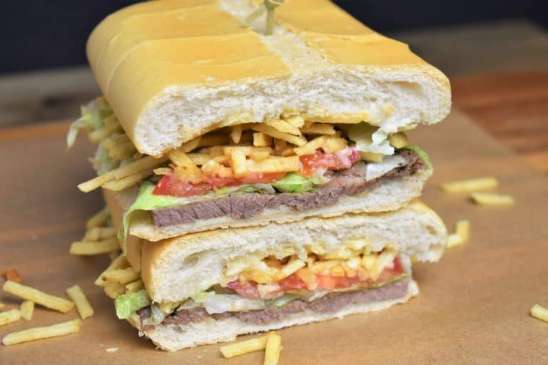

Pan Con Bistec

Pan con Bistec is a Cuban-style steak sandwich. They can be found in cafeterias and restaurants all over Miami, and they’re delicious.
Ingredients
- 4 Large Top Round Beef Steaks, thinly sliced (about 1 pound)
- 1 teaspoon Kosher Salt
- 1 teaspoon Garlic Powder
- ½ teaspoon Dried Oregano
- ¼ teaspoon Cumin
- Pinch of Black Pepper
- 2-3 tablespoon Oil, use a neutral oil with a high smoke point (we use canola oil)
- 1 Small Yellow Onion, thinly sliced
- 2 Loaves Cuban Bread
- 4 ounces Potato Sticks
- 2 tablespoons Mayonnaise, optional
- 2 cups Lettuce, chopped or shredded, optional
- 2 Tomatoes, , sliced Tomatoes, optional
- Butter, optional
Steps
- Combine the salt, garlic powder, oregano, cumin and black pepper in a small bowl. Season the steaks on both sides with the seasoning mix.
- Heat 2 tbsp. of oil in a large (very large) skillet over medium-high heat. When the oil is very hot, almost smoking, add as many steaks that will fit in the skillet without overcrowding.
- Cook the steaks about 2-3 minutes per side, until they’re golden brown and cooked through. Take the skillet off the heat, remove the steaks to a plate or pan and keep warm. Repeat with the remaining steaks. Note: It may be necessary to add another tablespoon of oil to cook the second batch of steaks.
- Do not wash the skillet, return it to medium-low heat and add the sliced onions. Cook the onions, stirring frequently, for 3-5 minutes until they start to soften, stirring frequently. Remove the skillet from the heat and set aside.
- Cut the loaves of bread to make 4 large pieces. Then open each piece by slicing it in half lengthwise.
- Add one steak and a quarter of the onions to the bottom half of the bread piece. Then add the mayonnaise, lettuce and tomato slices, if using. Add a generous amount of potato sticks and cover with the top piece.
- Gently, press the pan con bistec for a few minutes until the bread is toasty and starting to flatten out. If desired, brush a little bit of butter on the bread top prior to pressing to get a pretty sheen.
Back to Home